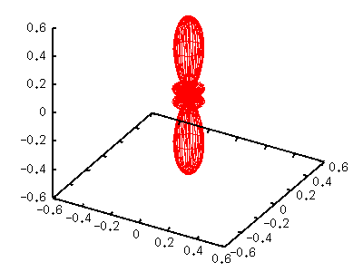
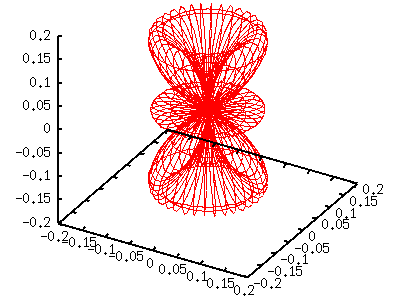
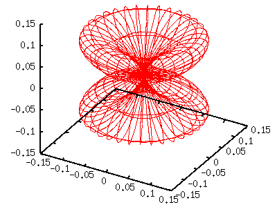
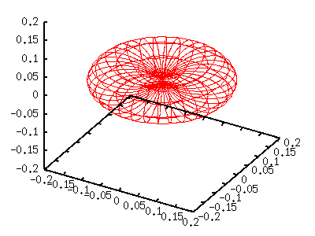

|
When l=3, there are seven functions those have a different
m value.
Y[3,-3](t,p) = -sqrt(35/64pi) sin(t)sin(t)sin(t) exp(-3i p)
Y[3,-2](t,p) = sqrt(105/32pi) sin(t)sin(t)cos(t) exp(-2i p)
Y[3,-1](t,p) = -sqrt(21/64pi) sin(t) {5cos(t)cos(t)-1} exp(-i p)
Y[3, 0](t,p) = sqrt(7/16pi) {5cos(t)cos(t)cos(t)-3cos(t)}
Y[3, 1](t,p) = sqrt(21/64pi) sin(t) {5cos(t)cos(t)-1} exp( i p)
Y[3, 2](t,p) = sqrt(105/32pi) sin(t)sin(t)cos(t) exp( 2i p)
Y[3, 3](t,p) = sqrt(35/64pi) sin(t)sin(t)sin(t) exp( 3i p)
Similar to the case of l=2 ,
we show the functions of m>0. Functions like fx(u,v) are the
same as the previously defined ones .
m=0
gnuplot> a= 7.0/(16*pi)
gnuplot> g(v)= (5*sin(v)*sin(v)*sin(v)-3*sin(v))**2
gnuplot> splot a*g(v)*fx(u,v),a*g(v)*fy(u,v),a*g(v)*fz(v)

m=1
gnuplot> a=21.0/(64*pi)
gnuplot> g(v)= (cos(v)*(5*sin(v)*sin(v)-1))**2
gnuplot> splot a*g(v)*fx(u,v),a*g(v)*fy(u,v),a*g(v)*fz(v)

m=2
gnuplot> a=105.0/(32*pi)
gnuplot> g(v)= (cos(v)*cos(v)*sin(v))**2
gnuplot> splot a*g(v)*fx(u,v),a*g(v)*fy(u,v),a*g(v)*fz(v)

m=3
gnuplot> a=35.0/(64*pi)
gnuplot> g(v)= (cos(v)*cos(v)*cos(v))**2
gnuplot> splot a*g(v)*fx(u,v),a*g(v)*fy(u,v),a*g(v)*fz(v)

|